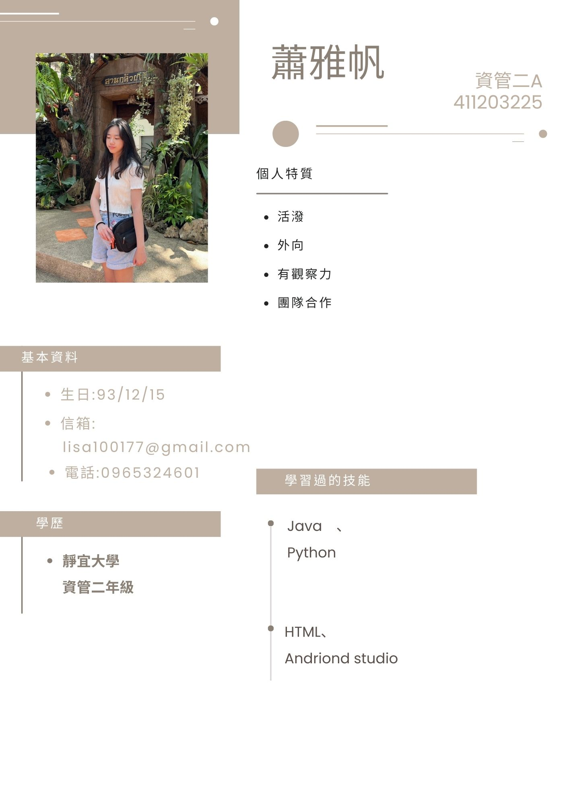

興趣何倫碼
S社會型 x C事務型
S社會型 x C事務型
特質:喜歡與人互動、幫助他人、教導或輔導別人；有強烈的同理心；擅長溝通、傾聽、協調、團隊合作
適合職業:教育類、醫療與照護、社會服務、與人際溝通的職務
特質:喜歡有組織、穩定、規律性的工作，做事謹慎、有條理、細心；喜歡依循明確的規則和步驟，不太喜歡太多變動、創意或模糊的情境
人力資源人員
負責招募與甄選、訓練與發展、薪酬福利、員工關係、績效評估等工作。
維護企業內部人力資源之相關紀錄。
規劃與執行人員招募、甄選與任用，以解決公司的人力需求問題。
設計、管理與執行公司的績效管理系統，並運用績效評核結果，提供管理上決策之參考。
規劃人力運用的預算，建立與維持公司的薪酬系統與工作規則、管理員工福利制度與退休金方案，並提供人事管理報表。
規劃公司的訓練發展體系，進行訓練與發展之需求分析、規劃、執行與成效評估。進行工作分析，作為日後部門進行職務盤點、職務分配、人力配置、部門職掌及職務說明書建立時的參考依據。
規劃、指導與協調所有與員工相關的問題，並主動針對需改進的政策提出建議，以達成最佳的管理成效。
同理心：善解人意、樂善好施熱於助人
負責任：做事認真可靠、有擔當盡責任
活力：工作精力充沛、做事情有幹勁
性格需具備 同理心、負責任、活力
興趣較偏好 S-社會、E-企業、C-事務
原因
測驗的結果顯示我是S社會型與C事務型，人力資源人員適合S、E、C的人，我會主動觀察他人情緒變化，適時給予支持與幫助，讓團隊能安心地合作，所以選擇這份工作是很不錯的選擇。
